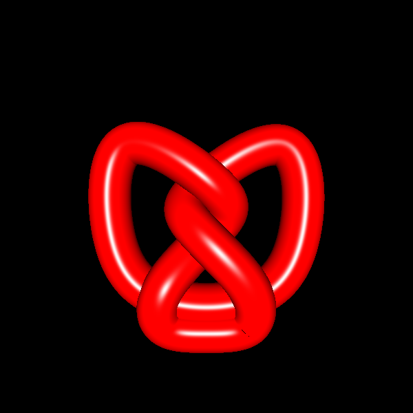
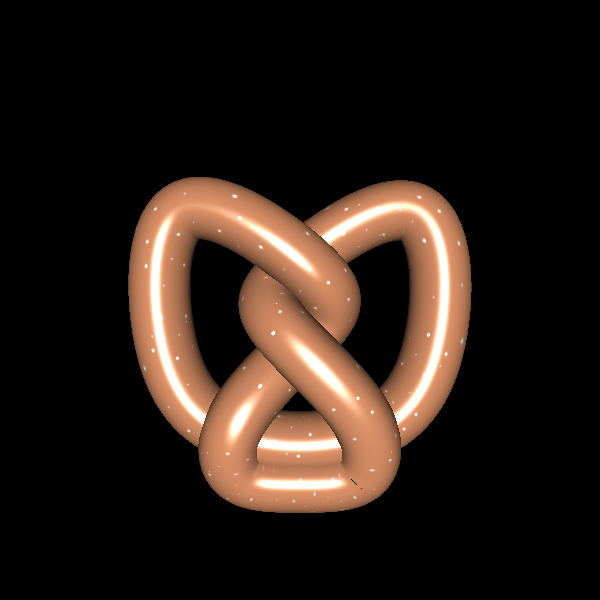
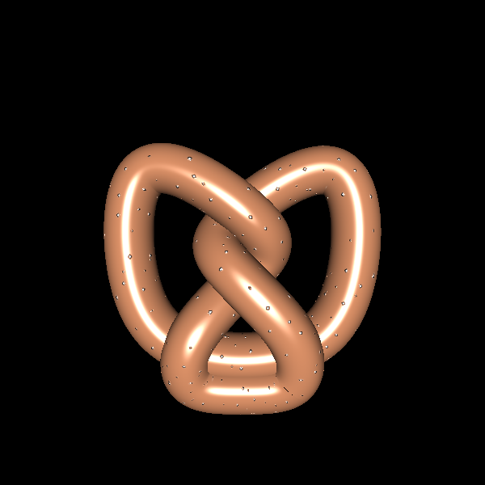
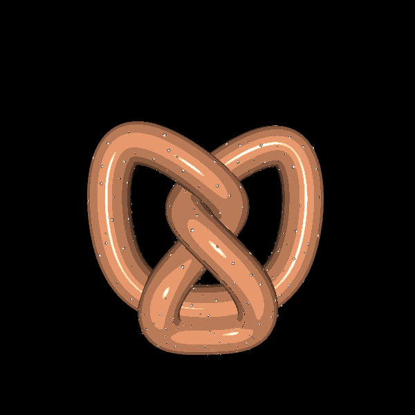
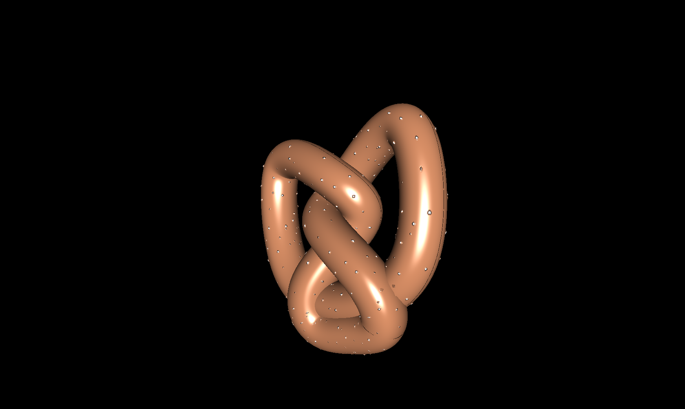
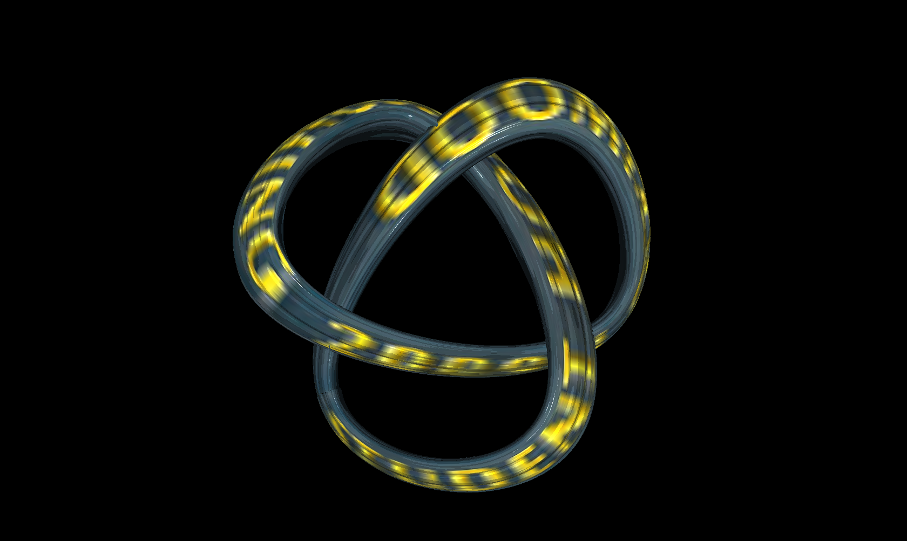
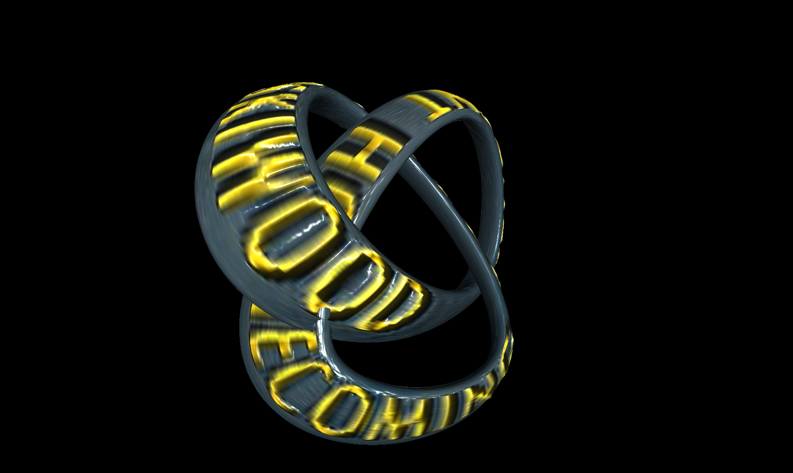

Chris's Awesome CS184 AS8
For AS8, I completed the minimum requirements of rendering a sweep with texture and bump mapping, as well as both Phong and Gouraud shading models.
In the above image, only Gouraud shading is enabled. Despite the high polygon count, there is still visible banding of the specular highlight.
In the above image, only Phong shading is enabled. It has the same polygon count as the above image but the image quality is much improved.
In the above image, Phong shading is used to render a texture-mapped object.
In the above image, Phong shading is used to render a bump-mapped object.
In the above animation, the pretzel is rotated around. It has toon shading, displacement mapping, texturemapping , and bump mapping neabled.
From the above images it should be fairly clear that the minimum requirements for the renderer are complete.
In the above image, a pretzel sweep is rendered with displacement mapping. You can clearly see the salt coming out of the pretzel, in contrast to the boring bump mapped version (not shown). You can download the .trk file here and the texture/bump map here.
{kind=link}
In the above image, the pretzel sweep above is rendered with toon-ish shading instead.
Below are some images I made by scanning in a real homecoming wristband, then making it the texture for the sweep (trk, texture, bump):
 {kind=link}
{kind=link}
Summary of useful keys
h: toon shading
d: displacement mapping
w: shaders
Extra credit
Below you can find a summary of the extra credit demoed above.
- Dynamic recompilation of shaders based on options: inspired by the ATI SDK parallax mapping demo, I implemented dynamic recompilation of shader programs to avoid excessive, expensive branching in the shader. This enables even displacement mapping to be rendered at more than 20 frames per second even with a very bad GPU (see below under Mac OS X), even with 40 samples per point in both the length-wise and around directions
- Displacement mapping: displacement mapping according to the height map is implemented. Parallax mapping, a cheaper but slightly inferior-looking version, is NOT implemented.
- Toon shading: by pressing "h", one can enable/disable toon shading, which merely discretizes the light levels that can be taken by the object. The Phong number has to be increased to make it look shiny instead of just weird.
- "Back"-face culling: (really culls the front faces because it's whack) culls the invisible faces for faster rendering
The program has been tested on the following platforms:
- Mac OS X Intel, with a GMA 950 "GPU". Yes, it runs on this chip, which is present in many netbooks as well. However, it actually only runs on this chip in Mac OS X because Apple somehow managed to get significantly better drivers for the GMA 950 in Mac OS X. However, OpenGL causes frequent crashes if settings are changed too often. The dynamic recompilation of shaders merely enables all the fancy stuff to show up at once.
- Windows 7, with an ATI Radeon HD 5450 and an ATI Radeon HD 4890.